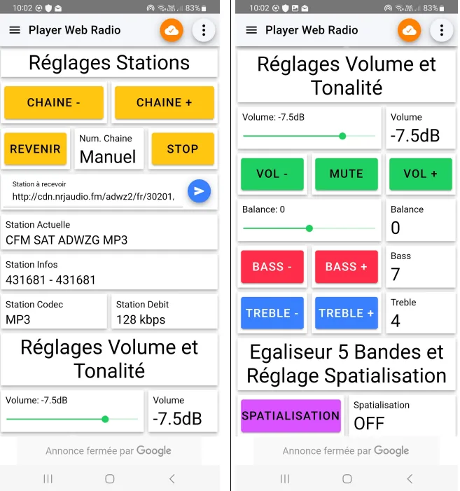

Web radio portable sur ESP32
Web radio portable permettant d'écouter des stations Internet en stéréo, avec un contrôle complet depuis un smartphone.
- Cadre
- BUT R&T
- Équipe
- Projet d'équipe
- Matériel
- ESP32 Feather - VS1053
- Statut
- Terminé
01En résumé
Objectif
Concevoir un système de transmission audio sans fil, du flux réseau jusqu'au casque.
Ma contribution
Assemblage matériel, programmation embarquée de l'ESP32 et mise en place du pilotage MQTT.
Résultat
Lecture de flux MP3/AAC, réglages audio et changement de station depuis un smartphone.
02Le projet
- Réception et décodage de flux audio MP3/AAC via Wi-Fi.
- Contrôle du volume, de la tonalité et de la spatialisation du son.
- Stations préprogrammées et interface de contrôle smartphone via MQTT.
- Gestion dynamique des connexions Wi-Fi avec WiFiManager.
03Démarche
- Spécifications : lecture du cahier des charges et choix des composants.
- Matériel : assemblage de l'ESP32 et du VS1053, vérification du bus SPI.
- Lecture de flux : premier programme de lecture de radios simples.
- Audio : volume, basses, aigus et spatialisation.
- Connectivité : WiFiManager puis pilotage MQTT depuis le smartphone.
- Tests : validation fonctionnelle et optimisation des performances.
04Technologies
- ESP32
- Microcontrôleur Wi-Fi, cœur du système
- VS1053
- Décodeur audio MP3/AAC
- Arduino IDE / C++
- Programmation embarquée
- SPI
- Liaison ESP32 ↔ VS1053
- MQTT
- Pilotage depuis le smartphone
- WiFiManager
- Configuration Wi-Fi dynamique
05Galerie

06Compétences BUT mobilisées (Apprentissage Critique)
AC12.01Mesurer, analyser et commenter les signaux
Analyse de la qualité audio en sortie du VS1053 (volume, basses, aigus, spatialisation) et interprétation des signaux échangés sur le bus SPI entre l'ESP32 et le décodeur.
AC12.02Caractériser des systèmes de transmissions élémentaires et découvrir la
modélisation mathématique de leur fonctionnement
Modélisation de la chaîne de transmission complète : flux audio MP3/AAC reçu en Wi-Fi --> décodage matériel VS1053 --> sortie analogique vers le casque. Identification des étapes de numérisation, de compression et de restitution du signal.
AC12.03Déployer des supports de transmission
Mise en œuvre d'un support de transmission sans fil (Wi-Fi) entre l'ESP32 et les serveurs de streaming, avec configuration dynamique via WiFiManager. Câblage et validation du bus SPI entre l'ESP32 et le VS1053.
AC12.05Communiquer avec un tiers (client, collaborateur…) et adapter son discours et
sa langue à son interlocuteur
Présentation du projet et des choix techniques (ESP32, VS1053, MQTT) devant l'équipe pédagogique, avec adaptation du vocabulaire au public. Communication au sein de l'équipe projet tout au long du développement.
07Bilan
Ce que j'en retiens
La programmation embarquée sur ESP32, la gestion de flux audio numériques et les protocoles SPI et MQTT, ainsi que l'intégration matériel / logiciel.
Avec du recul
J'aurais ajouté un égaliseur 5 bandes, un écran OLED affichant la station en cours et une gestion plus poussée des favoris.